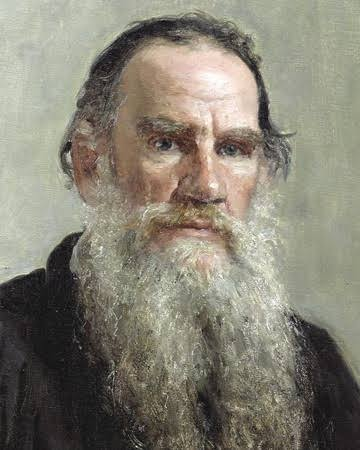
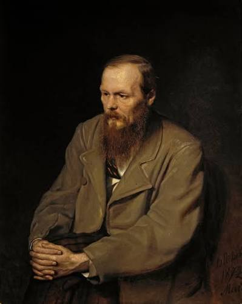
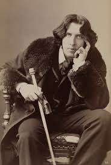

Words Worth Remembering
Sometimes a single sentence can stay in our minds longer than an entire book. Here are three thoughts from writers whose words continue to inspire readers.

"All, everything that I understand, I understand only because I love."
A reflection on how love can shape the way we understand people and the world around us.
Read Excerpts
"The mystery of human existence lies not in just staying alive, but in finding something to live for."
A thought about purpose, meaning, and the questions that make human life worth exploring.
Read Excerpts
"We are all in the gutter, but some of us are looking at the stars."
A reminder that perspective can change the way we see difficult moments and the world around us.
Read ExcerptsWhy Marginalia?
Marginalia is inspired by the notes readers leave in the margins of their favorite books. A highlighted sentence, a question, or a personal thought can become part of the reading experience.
This website collects literary excerpts, reflections, and visual elements that make books more personal and memorable.
Learn more about our project →